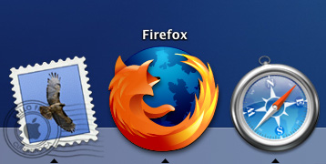

What a fox!
maandag 9 februari 2004 | Nerdisme
Firebird is niet meer… Lang leve Firefox! Als u nog steeds met Internet Explorer rondsurft, is het de hoogste tijd voor verandering: versie 0.8 van deze fantastische Mozilla browser staat steviger op poten dan ooit tevoren.
En wat een prachtig nieuw icoon en splashscreen! Ik ben er echt verliefd op. Juweeltjes zijn het. Vermeldenswaardig is ook de gloednieuwe skin voor Mac OS X gebruikers: clean, straightforward, soepel!
Download Firefox meteen! — Ja, jij ook!

UPDATE: Hier zie je hoe het Firefox icoon werd gemaakt.
Fre op 9 februari 2004
Even een kanttekening bij mijn eigen entry: de vervelende bug die er op OS X voor zorgde dat een klik op het icoon in de dock niet voor een nieuw venster zorgde is ook verdwenen! Hoera! Nu denk ik er zelfs over om zelfs Safari even aan de kant te zetten…